철도차량기사 (2004-05-23 기출문제)
1과목: 재료역학
1. 지름 10 mm의 균일한 원형 단면 막대기에 길이 방향으로 7850 N의 인장하중이 걸리고 있다. 하중이 전단면에 고루 걸린다고 보면 하중방향에 수직인 단면에 생기는 응력은?
- 785 MPa
- 78.5 MPa
- 100 MPa
- 1000 MPa
(정답률: 알수없음)

2. 지름이 22 mm인 막대에 25 kN 의 전단하중이 작용할 때 0.00075 rad의 전단변형율이 생겼다. 이 재료의 전단탄성계수는 몇 GPa 인가?
- 87.7
- 114
- 33
- 29.3
(정답률: 알수없음)
3. 그림과 같은 단순보가 좌측에서 우력 Mo가 작용하고있다. 이 경우 A점과 B점에서 모멘트는?
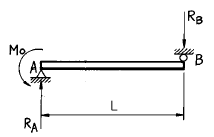
- MA = -Mo, MB = 0
- MA = 0, MB = -Mo
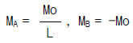
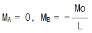
(정답률: 알수없음)
4. 40 kN의 인장하중을 받는 지름 40 mm의 알루미늄 봉의 단위 체적당의 탄성에너지는 몇 N.m/m3 인가?(단, 알루미늄의 탄성계수는 72 GPa이다.)
- 17020
- 6515
- 1702
- 7036
(정답률: 알수없음)
5. 그림과 같은 직사각형 단면의 짧은 기둥에서 점 P에 압축력 100 kN을 받고 있다. 단면에 발생하는 최대 압축응력은 몇 MPa 인가?
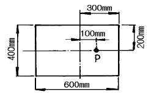
- 0.83
- 8.3
- 83
- 0.083
(정답률: 알수없음)
6. 보속의 굽힘응력의 크기에 대한 설명 중 옳은 것은?
- 중립면에서의 거리에 정비례한다.
- 중립면에서 최대로 된다.
- 위 가장자리에서의 거리에 정비례한다.
- 아래 가장자리에서의 거리에 정비례한다.
(정답률: 알수없음)
7. 보에 있어서 축선의 곡률반경(曲率半徑) ρ, 굽힘모멘트 M, 단면의 단면 2차 모멘트 Ⅰ, 탄성계수를 E라 하면 다음식 중 맞는 것은?
- ρ=EⅠM
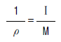
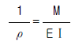
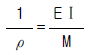
(정답률: 알수없음)
8. 전단 탄성계수가 80 GPa인 재료에 직교하는 2축 응력 σx=200 MPa, σy=-200 MPa 이 작용할 때, 그림과 같은 미소요소 a,b,c,d의 전단변형률 γ의 크기는? (단, 경사각 φ 는 45° 이다.)
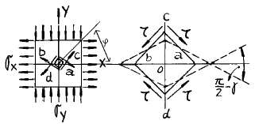
- 3.125 x 10-3
- 2.5 x 10-3
- 1.875 x 10-3
- 1.25 x 10-3
(정답률: 알수없음)
9. 다음 그림과 같은 돌출보에서 지점 반력은?
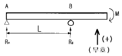
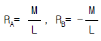
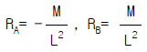
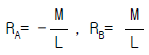
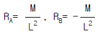
(정답률: 알수없음)
10. 그림과 같은 돌출보에 집중하중 P가 작용할 때 굽힘모멘트 선도(B.M.D)로 옳은 것은?
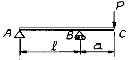
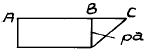
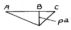
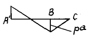
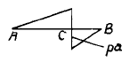
(정답률: 알수없음)
11. 직사각형 단면(폭 12 cm, 높이 5 cm)이고, 길이 1 m 인 외팔보가 있다. 이 보의 허용응력이 500 MPa이라면 높이와 폭의 치수를 서로 바꾸면 받을수 있는 하중의 크기는 어떻게 변화하는가?
- 1.2배 증가
- 2.4배 증가
- 1.2배 감소
- 변화없다
(정답률: 알수없음)
12. 그림의 구조물이 하중 P를 받을때 구조물속에 저장되는 탄성 에너지는?(단, 단면적 A, 탄성계수 E는 모두 같다.)
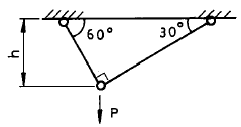
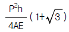
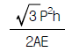
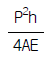
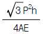
(정답률: 알수없음)
13. 길이 5 m의 봉이 상단에서 고정되어 세로로 매달려 있다. 봉이 10 ㎝x10 ㎝의 균일단면을 가지며 단위 길이당 중량이 800 N/m 일때 봉의 하단, 즉 자유단에서 늘어난 길이는 몇 mm 인가? (단, 탄성계수 E = 200 GPa 이다.)
- 0
- 5x10-3
- 10x10-3
- 20x10-3
(정답률: 알수없음)
14. 그림과 같은 보의 최대처짐을 나타내는 식은? (단, Ⅰ는 단면 2차 모멘트이고 보의 자중은 무시한다.)
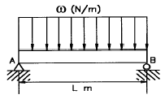
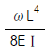
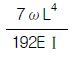
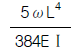
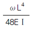
(정답률: 알수없음)
15. 중공축의 내부 직경이 40 mm, 외부 직경이 60 mm일 때, 최대 전단응력이 120 MPa를 초과하지 않도록 적용할 수있는 최대 비틀림 모멘트는 몇 kN.m 인가?
- 1.02
- 2.04
- 3.06
- 4.08
(정답률: 알수없음)
16. 다음 단면의 도심
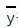
을 구하면?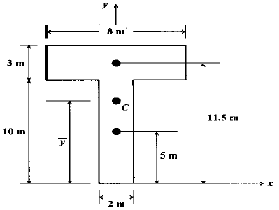
- 6.55m
- 7.25m
- 8.55m
- 9.25m
(정답률: 알수없음)
17. 그림과 같이 외팔보에 하중 P가 B점과 C점에 작용할 때 자유단 B에서의 처짐량은?
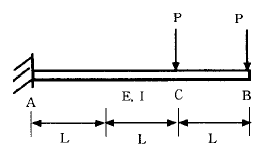
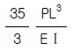
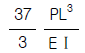
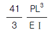
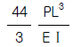
(정답률: 알수없음)
18. 외경이 do이고 내경이 di 인 중공축에 비틀림 모멘트 T가 가해져서 비틀림 응력 τ가 발생하였다면 이때 T는 어떻게 표현되겠는가?
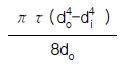
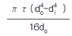
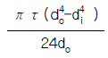
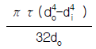
(정답률: 알수없음)
19. 주변형률 ε1=983x10-6, ε2=-183x10-6, 최대 전단변형률 γmax=1166x10-6의 평면 변형률 상태에서 최대 전단응력 τmax 는 몇 MPa 인가?(단, 탄성계수 E=200GPa, 포아송비 ν=0.3 이다.)
- 204
- 114.3
- 89.7
- 24.6
(정답률: 알수없음)
20. 주철제 환봉이 축방향 압축응력 40 MPa과 모든 반경방향으로 압축응력 10 MPa를 받는다. 탄성계수 E= 100 GPa, 포아송비 ν=0.25, 환봉의 직경 d=120 mm, 길이 L=200 mm일 때 실린더 체적의 변화량 立V는 몇 mm3 인가?
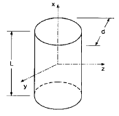
- -679
- -428
- -254
- -121
(정답률: 알수없음)
2과목: 내연기관
21. 다음은 디젤기관에서 조속기의 고유기능에 대한 설명이다. 맞는 것은?
- 유압식 조속기만 사용한다.
- 최대속도 제한기능을 한다.
- 실린더 충진율을 제한한다.
- 연료소비량을 감소시킨다.
(정답률: 알수없음)
22. 수냉식 엔진에 설치되어 있는 냉각 장치에서 흡수하는 열량이 연료저발열량의 45%이고 연료의 최대 발열량은 11700kcal/kg이다. 이 기관의 연료소비율은 180g/PS.h이고 냉각수 온도 상승 한계가 20℃때 이 엔진은 몇 ℓ 의 냉각수를 필요로 하는가? (단, 냉각수의 비열은 1 kcal/kg℃ 이다.)
- 47.385 ℓ /PS.h
- 46.325 ℓ /PS.h
- 45.465 ℓ /PS.h
- 44.585 ℓ /PS.h
(정답률: 알수없음)
23. 기관의 평형에 영향을 미치는 부품으로만 짝지어진 것은?
- 크랭크 축, 플라이 휠, 피스톤, 크랭크 축 풀리
- 크랭크 축, 플라이 휠, 피스톤, 실린더 헤드
- 크랭크 축, 플라이 휠, 실린더 블록, 크랭크 축 풀리
- 크랭크 축, 실린더 헤드, 피스톤, 크랭크 축 풀리
(정답률: 알수없음)
24. 자동차의 전후진동을 감소시키기 위한 방법이 아닌 것은?
- 뒤 액슬축의 비틀림 강성을 낮춘다.
- 기관의 질량을 작게한다.
- 타이어의 비틀림 강성을 낮춘다.
- 플라이휠의 관성모멘트를 작게한다.
(정답률: 알수없음)
25. 다음에서 세미 디젤기관(소구기관)에 대한 설명중 특징이 아닌 것은?
- 연료소비율이 낮고, 단위 출력당 중량이 크다.
- 구조가 간단하고 제작이 쉽다.
- 어선이나 소형화물선등에서 주로 사용한다.
- 연료의 사용범위가 넓다.
(정답률: 알수없음)
26. 가솔린기관의 고속회전시 회전력이 저하되는 가장 큰 원인은?
- 체적효율이 낮아지기 때문이다.
- 점화시기가 진각되기 때문이다.
- 혼합기가 너무 진하기 때문이다.
- 환기가 너무 잘되기 때문이다.
(정답률: 알수없음)
27. 기관 엔진오일의 양이 규정이상으로 많아지는 원인은?
- 기관 오일에 연료가 희석되었다.
- 기관 오일 점도가 과도하게 높아진다.
- 기관 회전속도가 낮다.
- 기관 오일압력이 지나치게 높아진다.
(정답률: 알수없음)
28. 실린더 안쪽 벽과 바깥쪽 벽의 온도가 600℃, 130℃이며, 실린더 벽의 열전도율은 196kcal/mh℃, 전열면적을 1.5m2 이라면 전 열전달량은 몇 kcal/h 인가?(단, 벽의 두께는 8mm 이다.)
- 17,272,500
- 18,272,500
- 19,272,500
- 20,272,500
(정답률: 알수없음)
29. 브레이턴 사이클의 열효율이 50%라면 압력비 Ø 는 얼마가 되는가? (단, 비열비 K=1.38이다.)
- 10.26
- 12.43
- 15.48
- 16.32
(정답률: 알수없음)
30. 배기관 압력이 증가하면 기관출력이 저하하는 가장 큰 이유는?
- 잔류가스 중량이 증가하기 때문
- 노크가 발생하기 때문
- 흡입압력이 저하하기 때문
- 열손실이 증가하기 때문
(정답률: 알수없음)
31. 가솔린 기관의 성능에 영향을 미치는 중요한 인자가 아닌것은?
- 흡입관의 압력
- 배압
- 압축비
- 연료의 비중량
(정답률: 알수없음)
32. 아래 그림과 같은 오토사이클의 이론적 P-V선도에서 연소실 체적은 어느 것인가?
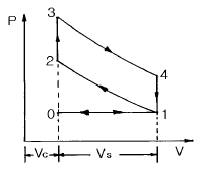
- Vc
- Vc + Vs
- Vs - Vc
- Vs
(정답률: 알수없음)
33. 행정체적 2.0ℓ 인 4행정 사이클 가솔린기관에서 압축비가 8.5 일 때 이론일을 구하면? (단, 흡기는 표준 대기이고, 혼합비는 14.7:1, 연료의 저위발열량은 42.7MJ/kg, 비열비 1.4, 공기밀도 1.29kg/m3이다.)
- 4.31 MJ
- 3.43 MJ
- 4.31 kJ
- 3.43 KJ
(정답률: 알수없음)
34. 자동차용 대체 연료 중 수소 연료의 특징이 아닌 것은?
- 지구 온난화의 주범인 이산화탄소는 전혀 배출되지 않는다.
- 최소 점화에너지가 극히 작다.
- 수소 연료를 자동차용 기관에 적용시 역화가 일어나기 쉽다.
- 자발화 온도가 경유에 비해 230° K정도 낮아 안정성에 문제가 있다.
(정답률: 알수없음)
35. 다음에 열거한 디젤기관의 연소실 중 가장 노크를 일으키기 쉬운 것은?
- 직접분사식
- 예연소실식
- 와류실식
- 공기실식
(정답률: 알수없음)
36. 디젤기관의 유해 배출가스 중 양이 상대적으로 가장 작은 것은?
- 입자상 물질
- CO
- NOx
- CO2
(정답률: 알수없음)
37. 실린더 벽의 마모량은 실린더의 길이 방향으로 모두 같지가 않다. 그 이유는 무엇인가?
- 축추력이 크랭크 각도에 따라 변하기 때문이다.
- 윤활유 유량이 길이 방향으로 변하기 때문이다.
- 블로바이 때문이다.
- 윤활유 속의 불순물 때문이다.
(정답률: 알수없음)
38. 내연기관에서 밸브 클리어런스(valve clearance)를 필요로 하지 않는 밸브 식은 어느 것인가?
- 오버 헤드 밸브(over head valve)식
- 유압 태핏(hydraulic tappet)식
- 사이드 밸브(side valve)식
- 오버 헤드 캠 샤프트(over head cam shaft) 식
(정답률: 알수없음)
39. 다음 중 인화점이 가장 낮은 것은?
- 등유
- 휘발유
- 경유
- 중유
(정답률: 알수없음)
40. 디젤기관의 분사노즐 중 분사초기에는 적은 양이 분사되다가 점차 분사량이 많아지게 되는 가변오리피스형 노즐은?
- 다공노즐
- 핀틀노즐
- 스로틀노즐
- 자동분사노즐
(정답률: 알수없음)
3과목: 기계설계
41. 나사산과 골을 반지름이 같은 원호로 이은 모양을 하고 있으며, 전구의 꼭지쇠와 같이 박판의 원통을 전조하여 만드는 것 등에 사용되는 나사는?
- 둥근나사
- 미터나사
- 유니파이나사
- 관용나사
(정답률: 알수없음)
42. 베벨기어의 피니언의 피치원추각 α1=25° , 기어의 피치원추각 α2=50° 일때 속도비 N1/N2는 다음중 어느 것인가?
- 1.0
- 1.4
- 1.8
- 2.2
(정답률: 알수없음)
43. 롤러 베어링에서 베어링에 작용하는 하중 P,수명계수 fh,속도계수 fv라 할 때 기본부하 용량 C는?
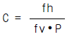
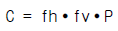
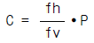
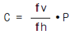
(정답률: 알수없음)
44. 다음 중 어떤 경우에 로크너트(lock nut)를 사용하는가?
- 2부품의 거리를 일정하게 유지하고자 할 때
- 용기 내부의 고압기체의 누설을 방지하고자 할 때
- 너트의 풀림을 방지하고자 할 때
- 물건을 달아 올리고자 할 때
(정답률: 알수없음)
45. 오픈 평벨트 전동장치에서, 유효장력이 100㎏f이고, 긴장 측의 장력이 이완측 장력의 3배 일 때, 벨트의 폭을 얼마로 하면 되는가? (단, 벨트의 허용인장응력 0.3㎏f/mm2, 두께가 5mm이고, 이음의 효율은 80%이다.)
- 125mm
- 150mm
- 200mm
- 250mm
(정답률: 알수없음)
46. 인장력이나 압축력을 전달하는 데 가장 적합한 이음은?
- 머프 축이음(split muff coupling)
- 자재 이음(universal joint)
- 코터 이음(cotter joint)
- 오울덤 축이음(Oldham's coupling)
(정답률: 알수없음)
47. 블록 브레이크의 계산에서 블록을 브레이크 드럼에 밀어 붙이는 힘 Q(㎏f), 블록드럼의 원주속도 v(m/sec), 마찰 면적 A(mm2), 마찰계수 μ , 블록과 브레이크 드럼 사이의 제동압력 p(㎏f/mm2)이라 하면, 브레이크의 제동마력 H(PS)를 구하는 공식으로 옳은 것은?
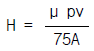
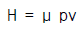
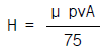
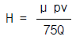
(정답률: 알수없음)
48. 롤러체인 전동장치에서 체인의 파단 하중은 6000㎏f이고 안전율은 15 일 때, 체인의 평균속도 5 m/s로 몇 ㎾의 동력을 전달할 수 있는가?
- 약 9.30㎾
- 약 13.33㎾
- 약 26.67㎾
- 약 19.61㎾
(정답률: 알수없음)
49. 축방향으로 활동(滑動)시킬 수 없는 키이(key)는 다음 중 어느 것인가?
- 각형(角形)스플라인 키이(spline key)
- 접선 키이(tangential key)
- 페더 키이(feather key)
- 인벌류우트 스플라인 키이(involute spline key)
(정답률: 알수없음)
50. 강판의 두께 16mm, 리벳의 지름 16mm, 리벳 구멍의 지름 18mm, 피치 68mm인 1줄 리벳 겹치기 이음에서 1피치마다 1600㎏f의 하중이 작용할 때, 판의 효율은 약 얼마인가?
- 74%
- 85%
- 62%
- 76%
(정답률: 알수없음)
51. 나사에 있어서 리이드 각을 λ ,비틀림 각을 β 라 할 때 (λ + β )는?
- 90°
- 45°
- 30°
- 60°
(정답률: 알수없음)
52. 원통 코일스프링의 코일의 평균지름만을 2배로 하여 다시 만들면 같은 축하중에 의한 처짐은 몇 배가 되는가?
- 2배
- 4배
- 8배
- 16배
(정답률: 알수없음)
53. 리벳이음이 파괴되는 경우를 살펴보면 다음 여러가지 경우가 고찰된다. 틀린 것은?
- 리벳 구멍사이의 강판이 절단(切斷)된다.
- 리벳이 전단으로 파괴된다.
- 리벳이 굽혀져서 파괴된다.
- 리벳과 강판의 가장자리가 절개(切開)된다.
(정답률: 알수없음)
54. 치(齒)직각 모듀울 5, 잇수 Z1 = 15, Z2 = 45인 헬리컬 기어가 물리고 있을 때, 그 중심거리는? (단, 비틀림각 β =15° 이다.)
- 약 125mm
- 약 155mm
- 약 300mm
- 약 355mm
(정답률: 알수없음)
55. 베어링의 밀봉(密封)방법 중에서 축에 접촉하면서 밀봉하는 방법은 어느 것인가?
- 유지구(油止溝)
- 래비린스(labyrinth)
- 플링거(flinger)
- 펠트링(feltring)
(정답률: 알수없음)
56. 파이프와 압력용기 등의 압력이 규정압력 이상이 되면 자동적으로 열려서 유체를 밖으로 유출시키고 규정압력 이하가 되면 자동적으로 닫아지는 밸브는?
- 조압밸브(escape valve)
- 정지밸브(stop valve)
- 첵밸브(check valve)
- 나비형 밸브(butterfly valve)
(정답률: 알수없음)
57. 원추 클러치에서 접촉면의 평균지름 760mm, 원추각 2α =20° 이며, 2000 rpm으로 20 PS을 전동하려고 할 때 축 방향으로 밀어 붙이는 힘은 몇 ㎏f 정도인가? (단, 마찰계수 = 0.2이다.)
- 30
- 35
- 25
- 40
(정답률: 알수없음)
58. 나란하지도 않고 만나지도 않는 두 축 사이에 동력을 전달 하는 데 사용할 수 없는 것은?
- 벨트
- 로우프
- 스크루기어
- 체인
(정답률: 알수없음)
59. 전동축을 가장 옳게 설명하는 것은?
- 주로 압축을 받는 축
- 주로 비틀림을 받으며 모양이나 치수가 정밀하고 작업을 하면서 동력을 전달하는 축
- 주로 비틀림과 굽힘 작용을 받으며 동력전달이 주목적인 축
- 축이 약간 휠수 있고 지장이 없이 회전할 수 있는 축
(정답률: 알수없음)
60. 10 PS를, 1000 rpm 으로 전달하는 40mm지름의 전동축에 5(b)× 4(h)× 22(ℓ)인 성크키이(Sunk key)를 사용할 때 키이에 발생하는 전단응력의 크기는?
- 약 1.63 Kgf/mm2
- 약 3.26 Kgf/mm2
- 약 6.07 Kgf/mm2
- 약 17.91 Kgf/mm2
(정답률: 알수없음)
4과목: 철도차량공학
61. 연결완충기(드래프트 기어)의 요구 조건 중 하나는?
- 초압력이 커야 한다.
- 완충행정이 커야 한다.
- 소산성능(효율)이 낮아야 한다.
- 완충용량이 크고 흡수할 수 있는 에너지가 커야한다.
(정답률: 알수없음)
62. 디젤전기 기관차의 주발전기 출력이 700 kw일 때 디젤기관의 견인마력은 몇 HP인가? (단, 주발전기효율은 93.8 % 이다.)
- 800
- 1000
- 1200
- 1400
(정답률: 알수없음)
63. 다음은 디젤기관에 대한 장단점이다. 올바른 것은?
- 비교적 인화성이 좋은 경유를 사용한다.
- 동일 출력의 가솔린 기관에 비해 형태가 작다.
- 압축비가 낮기 때문에 기동전동기가 작게 된다.
- 전기점화 장치가 필요하지 않다.
(정답률: 알수없음)
64. 전.후동력 새마을 동차에 6개월 검수 사항은?
- 보조 발전기 커풀링 검수
- 보조기관 충전발전기 분해 검수
- 보조기관 시동전동기 분해 검수
- 정온기 분해 기능시험 및 교환
(정답률: 알수없음)
65. 다음 중 기관의 형태가 645계가 아닌 디젤전기기관차는?
- 4100 호대
- 5000 호대
- 6000 호대
- 7000 호대
(정답률: 알수없음)
66. 8000 대 전기기관차의 축배치는?
- Co - Co
- Co - Co - Co
- Bo - Bo
- Bo - Bo - Bo
(정답률: 알수없음)
67. 내연기관의 사이클 중 최고온도와 최고압력이 일정할 때 열효율의 크기가 바르게 표기된 것은?
- 오토사이클＞디젤사이클＞사바데사이클
- 오토사이클＞사바데사이클＞디젤사이클
- 디젤사이클＞사바데사이클＞오토사이클
- 디젤사이클＞오토사이클＞사바데사이클
(정답률: 알수없음)
68. 다음은 피스톤 균열 원인이다. 맞지 않는 것은?
- 분사변에서 연료 유출 과다
- 피스톤 냉각유 공급 불량
- 냉각유관 구심 조정 불량
- 기관과열 상태 계속 운전
(정답률: 알수없음)
69. 견인전동기의 회전속도가 상승하면 어떤 현상이 발생하는 가?
- 발전기의 발생전압은 내려가고 전류는 증가된다.
- 후방전이가 일어난다.
- 주발전기와 견인전동기의 회로를 직렬에서 병렬연결로 자동적으로 바꿔진다.
- 주발전기의 출력이 증가한다.
(정답률: 알수없음)
70. 전기동차의 기대 점착계수가 가장 큰 제어방식은?
- 저항 제어
- 전기자 초퍼제어
- 계자 초퍼 제어
- VVVF 인버터 제어
(정답률: 알수없음)
71. 새마을호 객차에 장착된 만형 대차의 특징이 아닌 것은?
- 볼스터가 없다.
- 차체는 4 개의 에어백에 의해 대차 위에 지지된다.
- 최대 주행속도는 150 km/h 이다.
- 센타 피봇트에도 일부 수직 하중이 작용된다.
(정답률: 알수없음)
72. 윤활유가 디젤기관 내부에서 행하는 기능에 관한 설명중 잘못 기술된 것은?
- 베어링면에서 유막을 형성하여 열을 흡수하고 마모를 감소 시킨다.
- 탄소 입자, 금속분말 등 불순한 미세입자를 포착하여 윤활유 여과기까지 운반 여과한다.
- 실린더 라이너 및 오일팬 등을 냉각시킨다.
- 피스톤과 실린더 벽면에서 피스톤링의 실링(Sealing)을 완전하도록 도와준다.
(정답률: 알수없음)
73. 다음은 동력식 제동방식이다. 옳지 않은 것은?
- 진공 브레이크
- 사이드 브레이크
- 공기 브레이크
- 전기 브레이크
(정답률: 알수없음)
74. 차륜답면 찰상의 원인으로서 거리가 먼 것은?
- 제동력 과대로 활주
- 제동 완해불량
- 좌우 차륜직경 상이
- 주행속도의 과대
(정답률: 알수없음)
75. 디젤기관의 출력을 구하는 식으로 옳은 것은?(단, C는 4행정인 경우로 2, 2행정 기관인 경우 1, d=실린더내경 mm, S는 행정 mm, Z는 실린더 수, n는 회전수 rpm, Pm은 평균 유효압력 kg/cm2)
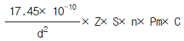
(정답률: 알수없음)
76. 차축 베어링 중 고속용 객차에 알맞는 것은?
- 실린더리컬 베어링
- 스훼리컬 베어링
- 테이퍼 베어링
- 스러스트 베어링
(정답률: 알수없음)
77. 철도차량용 냉매로 사용하고 있는 후레온-22의 증발열은? (단, kcal/kg)
- 40
- 80
- 328
- 539
(정답률: 알수없음)
78. 디젤기관에서 연료분사 요건은?
- 온도
- 압력
- 분사밸브
- 무화(미립화)
(정답률: 알수없음)
79. 냉동 사이클의 기본요소와 장치의 연결이 옳지 못한 것은 ?
- 열흡수장치 - 증발기(Evaporator)
- 압력증대장치 - 압축기(Compressor)
- 열제거장치 - 응축기(Condenser)
- 진공장치 - 팽창밸브, 모세관
(정답률: 알수없음)
80. DHC, PMC의 열차 냉방기에 대한 풍량이 옳지 않게 표현된 것은?
- condensing air : 84 CMM/set
- supply air : 42 CMM/set
- return air : 27 CMM/set
- fresh air : 15 CMM/set
(정답률: 알수없음)
5과목: 기계제작법
81. 수기 가공으로 수나사를 가공할 수 있는 공구는?
- 탭
- 다이스
- 바이스
- 바이트
(정답률: 알수없음)
82. 래핑의 특징에 대한 설명 중 잘못된 것은?
- 경면을 얻을 수 있다.
- 평면도, 진원도, 진직도 등 기하학적 정밀도가 높은 제품을 얻을 수 있다.
- 고도의 정밀가공은 숙련이 필요하다.
- 가공면에 랩제가 잔류하여 제품의 부식을 막아준다.
(정답률: 알수없음)
83. 이음매 없는 강관을 제조하는 방법으로 적합하지 않는 가공법은?
- 만네스만 압연(mannesmann rolling)
- 인발(drawing)
- 압출(extrusion)
- 맞대기 심 용접(seam welding)
(정답률: 알수없음)
84. 그림과 같은 테이퍼 (Taper)를 가공할 때, 심압대의 편위량은 얼마인가?
- 1 mm
- 1.25 mm
- 1.5 mm
- 2.5 mm
(정답률: 알수없음)
85. 상품명에서 이름 지어진 링컨 용접법(Lincoln weld)은 어떤 용접을 말하는가?
- 탄산(CO2)가스 아크 용접
- 서브머지드 아크 용접
- 스터드 용접
- 일렉트로 슬랙 용접
(정답률: 알수없음)
86. 큐폴러(Cupola)의 크기는 무엇으로 표시하는가?
- 1회에 용해하는데 사용된 코우크스의 양
- 1회에 용해할 수 있는 철의 양
- 1시간당 용해되는 철의 무게를 ton 으로 표시 한 것
- 시간당 송풍량
(정답률: 알수없음)
87. 단면감소율, 다이의 각도, 윤활법, 역장력 등을 그 인자(因子)로 하는 소성가공법은?
- 압축가공
- 스피닝
- 인발가공
- 압출가공
(정답률: 알수없음)
88. CNC선반의 절삭 이송시 G 기능 중 G01이 갖는 의미는?
- 위치결정
- 직선보간
- 원호보간
- 나사절삭
(정답률: 알수없음)
89. 방전가공시 전극(가공공구) 재질로 사용되지 않는 것은?
- 황동
- 텅스텐
- 구리
- 알루미늄
(정답률: 알수없음)
90. 피복아크 용접봉 홀더에서 KS규격의 종류가 아닌 것은?
- 125호
- 160호
- 180호
- 200호
(정답률: 알수없음)
91. 연삭비(grinding ratio)를 옳게 나타낸 것은?
(정답률: 알수없음)
92. 두께 5mm의 연강판에 직경 10mm의 펀칭 작업을 하는 데 크랭크 프레스 램의 속도가 10m/min 이라면 이 때 프레스에 공급되어야 할 동력은 약 몇 PS 인가?(단, 연강판의 전단강도는 30kgf/mm2 이고 프레스의 기계적 효율은 80%이다.)
- 13.1
- 9.7
- 15.5
- 11.3
(정답률: 알수없음)
93. 기계재료의 가공성들에 대한 용어 중에서 적당치 않은 것은?
- 탄성
- 단조
- 절삭성
- 접합성
(정답률: 알수없음)
94. 다음 각각의 측정기에 대한 설명이 옳은 것은?
- 옵티컬 플랫은 표면 거칠기를 측정하는 것이다.
- 옵티컬 플랫으로 측정검사할 때 평행하게 나타나는 간섭무늬가 적을수록 평면도가 좋다.
- 수준기는 물을 봉입한 유리관 안에 작은 기포를 남겨둔 것으로 수평도을 알아보는 측정기이다.
- 사인바로 각도를 금긋기 할때 블록게이지의 높이
 이다. L은 사인바의 길이 이다.
이다. L은 사인바의 길이 이다.
(정답률: 알수없음)
95. TTT선도에서 Mf점과 Ms점 사이 100~200℃ 정도에서 담금질을 하여 항온변태를 행하는 방법은?
- 오스템퍼(austemper)
- 마르템퍼(martemper)
- 마르퀀칭(marquenching)
- 계단 담금질(interrupted quenching)
(정답률: 알수없음)
96. 버니어 캘리퍼스는 일반적으로 부척의 한 눈금이 본척의 n-1개의 눈금을 n등분한 것이다. 본척의 한 눈금이 A라고하면 읽을 수 있는 최소 치수는?
- nA
(정답률: 알수없음)
97. 스플라인 구멍(보스)의 홈을 가공하거나 복잡한 형상의 구멍을 정확하게 가공할 수 있고, 다량 생산을 위하여 사용되는 공작기계는?
- 보링머신
- 슬러팅 머신
- 브로칭 머신
- 펠로즈 기어 셰이퍼
(정답률: 알수없음)
98. 소성변형이 비교적 잘되는 금속재료를 상온 또는 고온에서 회전하는 롤 사이로 통과시켜 여러 가지의 판재, 형재, 관재 등의 소재를 만드는 가공법은?
- 압출
- 압인
- 압연
- 단조
(정답률: 알수없음)
99. 강철주물용 주물사의 주성분은?
- Aℓ203
- SiO2
- Mg0
- Fe03
(정답률: 알수없음)
100. 담금질한 강철을 적당한 온도로 A1 변태점 이하에서 인성을 증가시키는 조작은?
- 뜨임
- 풀림
- 불림
- 항온열처리
(정답률: 알수없음)